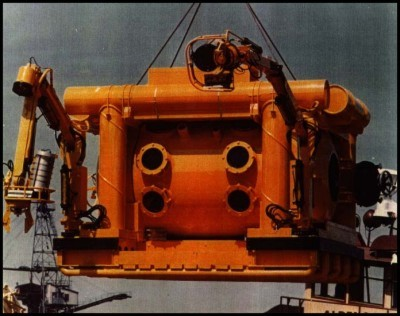

Recoverer-1


RECOVERER 1 is a tethered 2-3 person submersible
with 2 hydraulic
manipulator arms that was built during the "Golden
Age" of underwater exploration.
Designed and built by Ray Edwards, she was originally
launched in 1965.
Mr. Edwards went on to distinguished career as a
consultant to the
U.S. Navy's deepest diving research subs. His hatch
and manipulator
design is still the standard of the day.
Designed and built mainly to do "classified" Navy
salvage work
"RECOVERER-1" has successfully completed over 500
dives. Due to
its weight and stability she will excel as a photographic
and TV
observation unit as well as an environmental and
sea life measurement unit.
Her 10' hydraulic arms can each lift 1,000 lbs. and
the claws can go
from gently picking up a porcelain cup to crushing
2 inch pipe if
necessary. Since she is hooked to the mother ship
for air and electricity
work times can be kept productive and crews safe
and comfortable at
her 1,000 ft. depth rating with 100% safety margin.
EQUIPPED WITH: